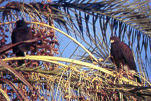

| These photographs accompany records that have been recently submitted to the committee. This record
has been ACCEPTED thus removing the "E" (extirpated) from this species on the Official State List.  Harris's Hawks Parabuteo unicinctus 11 Dec 94, Borrego Valley, SD 1996-080A © 1994 Michael A. Patten |